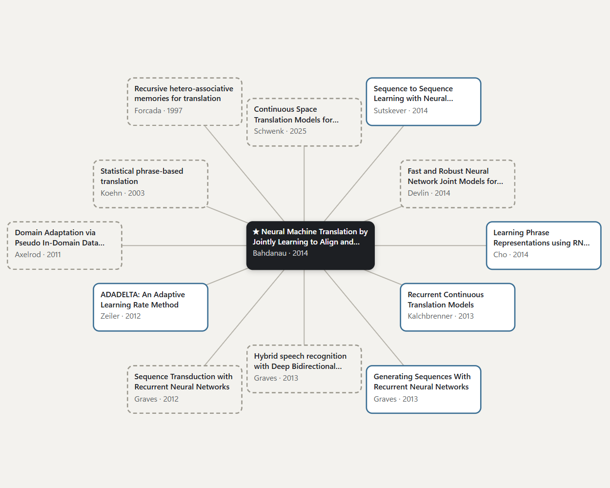
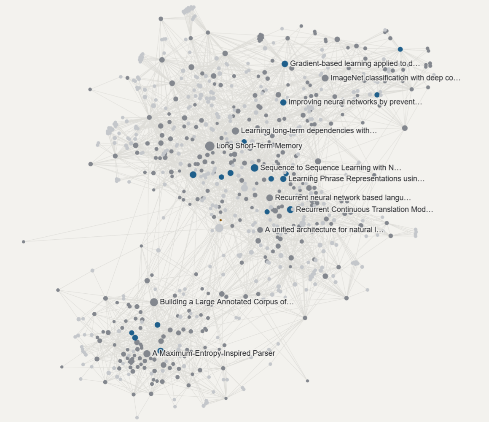

Your research library, built from citations.
Give it one paper. Filiation follows the references, keeps the open-access PDFs, searches inside them to the page, and lets your AI assistant use all of it. Simple to use, and it never leaves your computer.
 Claude
GitHub Copilot
Cursor
Gemini CLI
Zotero
Claude
GitHub Copilot
Cursor
Gemini CLI
Zotero

Install it, give it a paper, search.
No account, no server, no settings files. One window that shows your papers, and one box to search them.

Install
One installer for Windows, no admin rights. Filiation asks where your library should live, and that is all the setup there is.
Keep Zotero. Let Filiation grow it.
Filiation reads your Zotero library, read-only. Then it follows your papers' references, finds the papers your library keeps citing that you don't have yet, and keeps their open-access PDFs, searchable to the page.

One paper in, a library out.
fil add 10.7717/peerj.4375Type a few words. Get the page.
Search by keywords across every PDF you have. Filiation ranks whole papers by their best passages, their titles and abstracts, and shows each passage with its page. This sample searches a real library of open-access papers.
Ask the assistant you already use.
Connected over MCP, your assistant searches your library, reads the passages and answers with the page each came from, so you can check every claim. It runs Filiation only while it needs it, on your computer.
claude mcp add filiation -- fil mcpClaude called search_library("attention alignment translation")Everything in one calm window.
Your library, one paper per row, with its PDF, labels and the paper open beside it.
Keep the tools you like. Add what they don't do.
What do you use today? Pick one or more.
| Feature | Filiation | Reference managers | Citation-map websites | AI research assistants |
|---|---|---|---|---|
| Where your library lives | Your computer | Your computer, with optional sync | Their servers | Their servers |
| Account needed | No | Only to sync | Usually | Yes |
| Follows citations to find papers | Yes | No | Yes | Partly |
| Keeps the PDFs | Open-access ones, and yours | Yes | No | No |
| Searches inside your PDFs | Yes, to the page | Yes | No | Their own index |
| Works with your AI assistant (MCP) | Yes | Through add-ons | No | They are the assistant |
| Formats citations for writing | No | Yes | No | Sometimes |
| Free and open source | Yes | Some | Rarely | Rarely |
Reference managers such as Zotero and Mendeley; citation-map websites such as Connected Papers, ResearchRabbit and Litmaps; AI research assistants such as Elicit and Consensus. Names belong to their owners; no endorsement is implied.
Filiation: which text was copied from which.
Textual critics draw a stemma to show which manuscript descends from which. Filiation does the same for papers: pick two and it finds the chain of citations between them.
An illustration: each line is a real citation.
Honest about your data, and about the data.
Your library is a folder you choose, with readable PDF folders inside. No account, and it exports to Gephi and NetworkX.
Only legal open-access copies, never from behind a paywall or through anyone's login. Add the PDFs you have for the rest.
Citations come from OpenAlex's reference lists, not from a model reading papers. Search ranking is measured on a fixed test set.
Use it your way.
claude mcp add filiation -- fil mcp